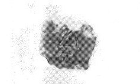
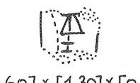

-
ZA28
Names
ZA28, ZA 28
Support
Stone vessel
Location
Zakros
Findspot
Unavailable


Scribe
ZA Scribe 2
Context
Unavailable
Dimensions
Catalogue
Readings
1 1 0 GRA+PA certain
1 1 1 1 doubtful
𐛭𐄇
GRA+PA1
𐛭𐄇
GRA+PA1
ZA 28
, page tablet (HM --) (GORILA
III: 204-205), provenience unknown
ZA Scribe
2?
|
side.line
|
statement
|
logogram
|
number
|
fraction
|
|
|
supra
mutila
|
|
|
|
|
|
|
] GRA+PA {*574}
|
1
[
|
|
|
|
infra mutila
|
|
|
|
Commentary © John Younger
References
papers/GORILA-Vol3.pdf#page=228